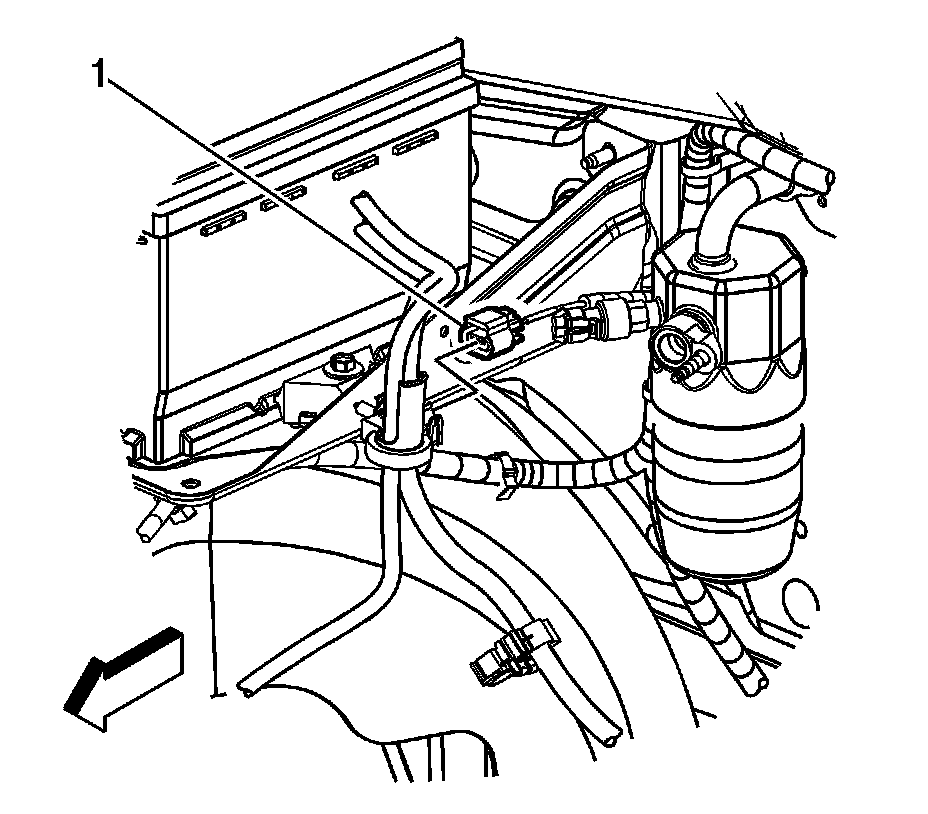
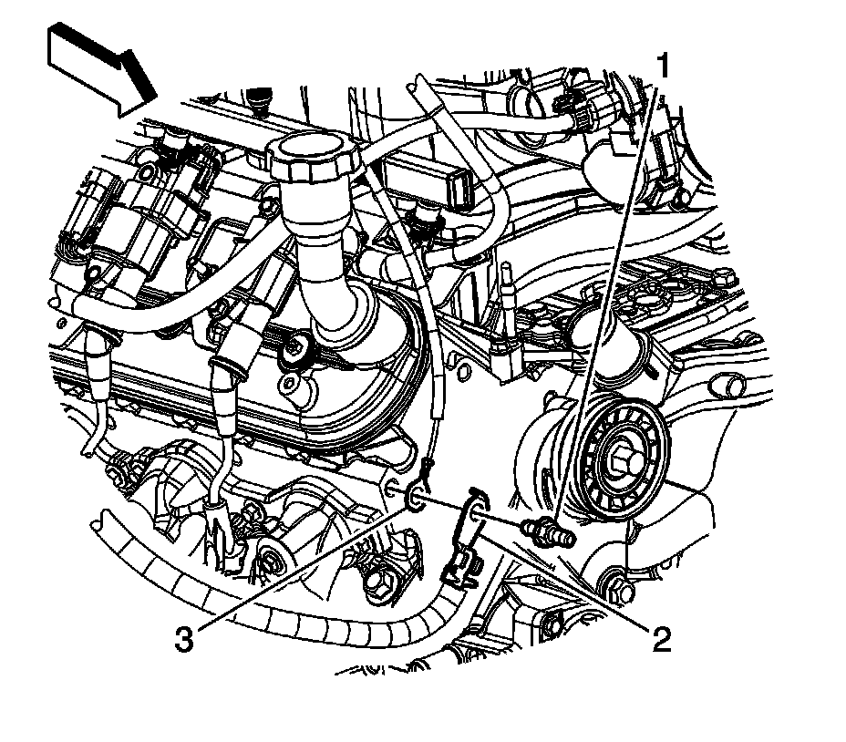
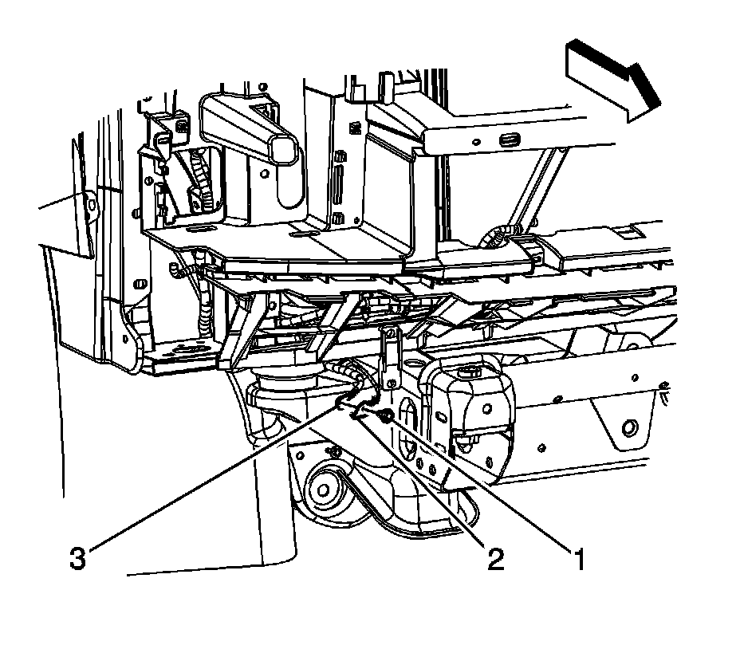
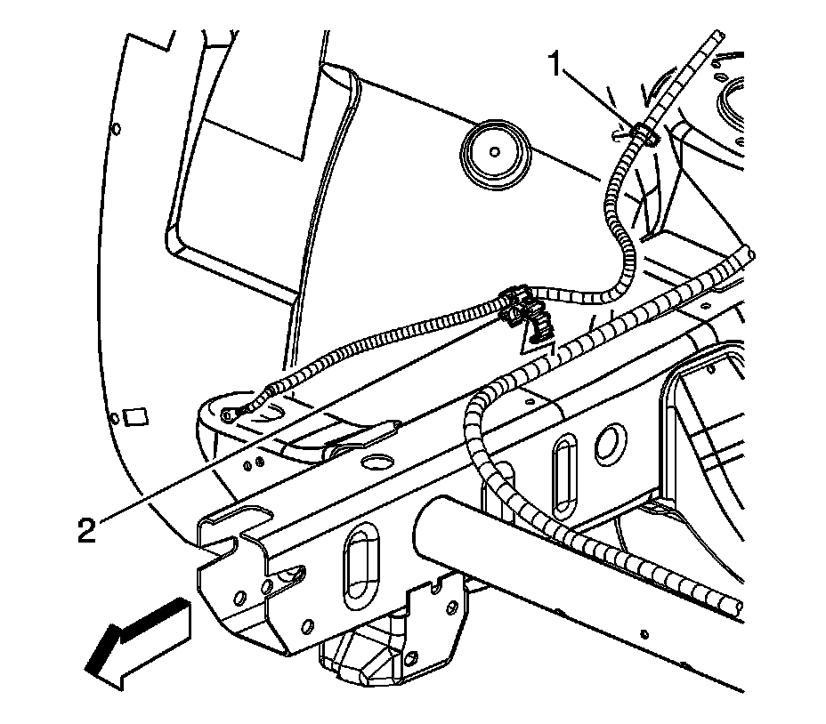
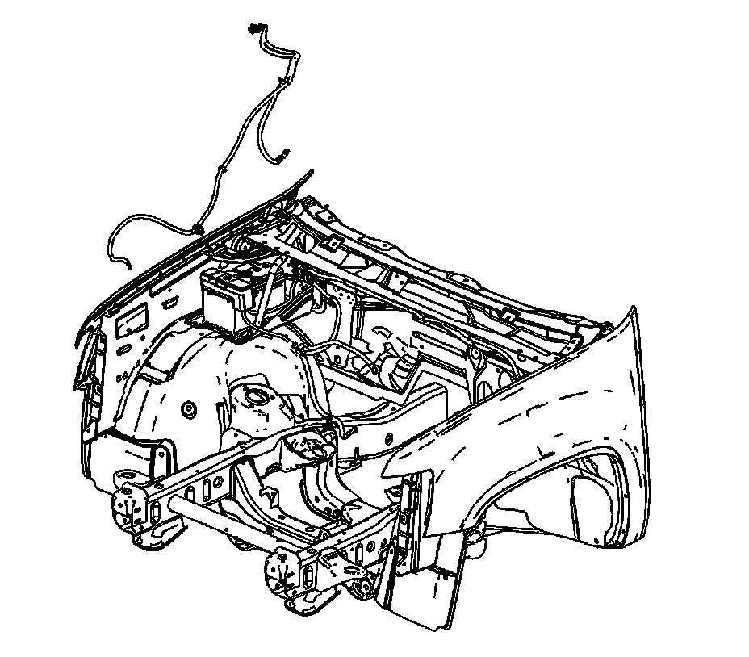
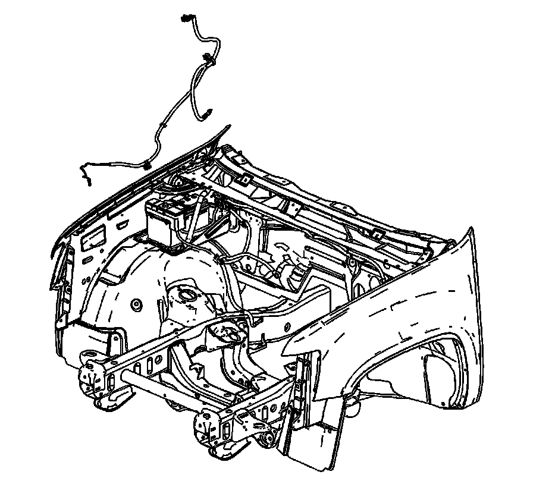

Negative: Service and Repair
BATTERY NEGATIVE CABLE REPLACEMENT
REMOVAL PROCEDURE

1. Disconnect the negative battery cable.
2. Remove the air cleaner outlet duct.
3. Disconnect the engine harness electrical connector (1) from the battery current sensor.

4. Remove the battery current sensor (3) clip from the battery tray, if equipped with a battery current sensor.

5. Remove the negative battery cable stud (1) from the front of the right cylinder head.
6. Remove the negative battery cable terminal (2) from the cylinder head.

7. Raise and support the vehicle. Refer to Vehicle Lifting.
8. Remove the forward lamp wiring harness ground bolt (1).
9. Remove the forward lamp wiring harness terminal (2) from the frame.
10. Remove the negative battery cable terminal (3) out through the opening between the radiator support and frame.

11. Remove the negative battery cable clip (2) from the chassis harness.
12. Lower the vehicle.
13. Remove the negative battery cable clip (1) from the right wheelhouse liner.

14. Remove the negative battery cable from the vehicle, if equipped without a battery current sensor.

15. Remove the negative battery cable from the vehicle, if equipped with a battery current sensor.
16. If replacing the negative battery cable, remove the battery current sensor, if equipped.
INSTALLATION PROCEDURE
1. If the negative battery cable was replaced, install the battery current sensor, if equipped.
2. Install the negative battery cable to the vehicle, if equipped with a battery current sensor.
3. Install the negative battery cable to the vehicle, if equipped without a battery current sensor.
4. Ensure that the engine harness terminal (3) is position behind the negative battery terminal (2).
5. Position the negative battery cable terminal (2) to the cylinder head.
6. NOTE: Refer to Fastener Notice in Service Precautions.
Install the negative battery cable stud (1) to the front of the right cylinder head.
Tighten the stud to 25 N.m (18 lb ft).
7. Install the negative battery cable clip (1) to the right wheelhouse liner.
8. Raise the vehicle.
9. Install the negative battery cable clip (2) to the chassis harness.
10. Route the negative battery cable terminal (3) through the opening between the radiator support and frame.
11. Ensure that the negative battery cable is positioned behind the forward lamp harness.
12. Install the forward lamp wiring harness terminal (2) to the frame. Ensure that the anti-rotation tab is inserted into the hole in the frame.
13. Install the forward lamp wiring harness ground bolt (1).
Tighten the bolt to 25 N.m (18 lb ft).
14. Lower the vehicle.
15. Install the battery current sensor (3) clip to the battery tray, if equipped with a battery current sensor.
16. Connect the engine harness electrical connector (1) to the battery current sensor.
17. Install the air cleaner outlet duct.
18. Connect the negative battery cable.